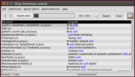
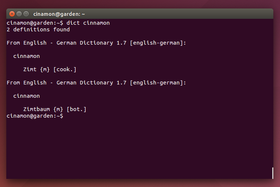
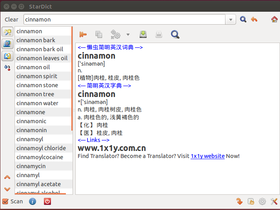
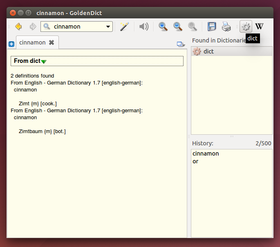
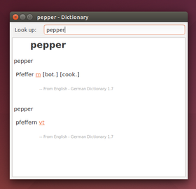
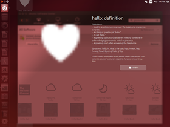

Wörterbücher
Zum Verständnis dieses Artikels sind folgende Seiten hilfreich:
Für Linux gibt es recht leistungsstarke On- und Offline-Wörterbücher. Dabei sind die Wörterbücher jedoch meist auf die Übersetzung ins Englische bzw. aus dem Englischen heraus beschränkt. Dann muss man auf die weiter unten genannten Online-Wörterbücher ausweichen. Daneben gibt es auch Werkzeuge zur maschinellen Übersetzung von Texten.
Programme¶
Ding¶
|  |
| ding |
Ding  ist ein deutsch-englisches Wörterbuch. Es hat viele Konfigurationsoptionen und bietet über eine History- und Hilfsfunktion. Das Programm macht zwar optisch nicht viel her, ist aber sehr leistungsstark. So kann man z.B. einstellen, dass es automatisch nach Übersetzungen sucht, sobald ein Wort in einer anderen Anwendung markiert wird, und, wenn es einen Eintrag gefunden hat, in den Vordergrund springt. Für Ubuntu kann man die Pakete
ist ein deutsch-englisches Wörterbuch. Es hat viele Konfigurationsoptionen und bietet über eine History- und Hilfsfunktion. Das Programm macht zwar optisch nicht viel her, ist aber sehr leistungsstark. So kann man z.B. einstellen, dass es automatisch nach Übersetzungen sucht, sobald ein Wort in einer anderen Anwendung markiert wird, und, wenn es einen Eintrag gefunden hat, in den Vordergrund springt. Für Ubuntu kann man die Pakete
ding (universe)
trans-de-en (universe, Sprachpaket für das deutsche Wörterbuch)
 mit apturl
mit apturl
Paketliste zum Kopieren:
sudo apt-get install ding trans-de-en
sudo aptitude install ding trans-de-en
installieren [1].
Auf der Seite der TU Chemnitz  gibt es das aktuelle Wörterbuch "Deutsch-Englisch", auf savannah.nongnu.org ein Wörterbuch "Spanisch-Deutsch" und unter en.wiktionary.org Wörterbücher von Englisch in verschiedene Sprachen. Diese müssen gegebenenfalls entpackt [5] und nach /usr/share/trans kopiert [2] werden. Anschließend kann in Ding unter "Einstellungen -> Suchmethoden" eine bestehende Methode geändert oder eine neue erstellt werden.
gibt es das aktuelle Wörterbuch "Deutsch-Englisch", auf savannah.nongnu.org ein Wörterbuch "Spanisch-Deutsch" und unter en.wiktionary.org Wörterbücher von Englisch in verschiedene Sprachen. Diese müssen gegebenenfalls entpackt [5] und nach /usr/share/trans kopiert [2] werden. Anschließend kann in Ding unter "Einstellungen -> Suchmethoden" eine bestehende Methode geändert oder eine neue erstellt werden.
Für KDE gibt es ein Frontend zu Ding. Dieses trägt den Namen KDing .
Ubuntu 14.04¶
Unter Ubuntu 14.04 startet Ding nicht. Das liegt daran, dass beim Programmstart nach wish gesucht wird. Bei 14.04 heißt diese Datei jedoch wish8.4. Um den Fehler zu beheben, erstellt man mit Root-Rechten eine Verknüpfung (Symlink):
sudo ln -s /usr/bin/wish8.4 /usr/bin/wish
Danach startet Ding wie gewohnt. Es kann auch helfen, das Paket tk nachzuinstallieren. Der Fehler wurde in Ubuntu 14.10 oder neuer behoben.
Ubuntu 16.04¶
Mit Ubuntu 16.04 funktioniert Ding zunächst nicht wie gewohnt. Dies liegt daran, dass der voreingestellte Suchbefehl egrep inzwischen veraltet ist. Die Alternative grep -E lässt sich in Ding jedoch nicht einstellen.
Abhilfe schafft die Installation des Pakets agrep[1].
Anschließend kann man in den Suchmethoden von Ding agrep als Befehl auswählen und hat wieder volle Funktionalität.
Dict¶
|  |
| dict im Terminal |
Dict ist ein Wörterbuch für das Terminal.
dict (für alle Wörterbuch-Module)
dict-de-en (universe, deutsch-englisches Wörterbuch)
dictd (Server für Kommunikation von dict mit den Sprachmodulen)
mit apturl
Paketliste zum Kopieren:
sudo apt-get install dict dict-de-en dictd
sudo aptitude install dict dict-de-en dictd
Installation von Wörterbüchern¶
Um Dict verwenden zu können, müssen noch die Pakete für die gewünschten Sprachen installiert werden. Für dieses Wörterbuch gibt es von Freedict viele verschiedene Wörterbuch-Module. Die meisten der Module sind als Ubuntu-Pakete verfügbar und können je nach Wunsch installiert [1] werden:
dict-freedict-MODULNAME, universe, installiert das angegebene Sprachmodul
Durch das Projekt wiktionarytodict gibt es Wörterbücher für Dict, die auf Wiktionary basiert sind. Manche dieser Wörterbücher enthalten mehr Wörter als die des Freedict-Projekts. Diese sind als "Personal Packages Archiv" (PPA) [7] verfügbar:
Adresszeile zum Hinzufügen des PPAs:
ppa:tkedwards/wiktionarytodict-ppa
Hinweis!
Zusätzliche Fremdquellen können das System gefährden.
Ein PPA unterstützt nicht zwangsläufig alle Ubuntu-Versionen. Weitere Informationen sind der  PPA-Beschreibung des Eigentümers/Teams tkedwards zu entnehmen.
PPA-Beschreibung des Eigentümers/Teams tkedwards zu entnehmen.
Damit Pakete aus dem PPA genutzt werden können, müssen die Paketquellen neu eingelesen werden.
Nach dem Aktualisieren der Paketquellen können die verfügbaren Wörterbücher aufgelistet werden:
apt-cache search wikt-*
Folgende Pakete installieren dann z.B die Wörterbücher Deutsch->Englisch und Englisch->Deutsch:
wikt-deu-eng (ppa)
wikt-eng-deu (ppa)
mit apturl
Paketliste zum Kopieren:
sudo apt-get install wikt-deu-eng wikt-eng-deu
sudo aptitude install wikt-deu-eng wikt-eng-deu
Dict benutzen¶
Um ein Wort zu übersetzen, gibt man in einem Terminal [4] ein:
dict WORT
Als WORT setzt man das gesuchte Wort ein. Soweit nicht anders angegeben, wird in allen installierten Modulen nach einer Übersetzung gesucht. Natürlich kann man auch ein englisches Wort ins Deutsche übersetzen lassen. Setzt man den Suchbegriff in Anführungszeichen "WORT1 WORT2" wird nach einem zusammenhängenden Begriff gesucht.
Darüber hinaus wird mit dem Paket dict auch das Script colorit installiert, um Textausgaben im Terminal farblich hervorzuheben. Das funktioniert mit dict dann über eine Pipe:
dict WORT | colorit
Es gibt außerdem verschiedene Pakete, die auf Dict aufbauen, wie OpenDict .
Translate Shell¶
Translate Shell arbeitet wie Dict im Terminal und bietet Wörterbücher für ca. 125 verschiedene Sprachen an. Allerdings wird eine Internetverbindung vorausgesetzt, da die Übersetzung via Google Translate erfolgt.
Der Funktionsumfang ermöglicht die Übersetzung von:
einzelnen Wörtern
eingegebenen Texten
Ausgaben
Textdateien
Webseiten
sowie das Abspeichern der Übersetzungen in Textdateien.
Installation¶
translate-shell (multiverse, ab Ubuntu 15.04)
mit apturl
Paketliste zum Kopieren:
sudo apt-get install translate-shell
sudo aptitude install translate-shell
Besitzt man eine ältere Ubuntu-Version, beschreibt der Abschnitt Installation der Homepage andere Installationswege.
Benutzung¶
Es ist möglich, Eingaben oder Ausgaben auf der Kommandozeile zu übersetzen:
echo "Hallo, du" | trans -b :fr
Die Antwort auf französisch:
Bonjour, vous
Während
:frfür die gewünschte Zielsprache steht, verkürzt-bbzw.-briefdie ansonsten längere Ausgabe. Wenn der Text Leer- oder Sonderzeichen enthält, muss er zwischen zwei einfache'oder doppelte Anführungszeichen"geschrieben werden.
Übersetzung einer Textdatei mit
--inputoder-i:trans -b -i input.txt :fr
input.txt wird ins Französische übersetzt. Eine andere Möglichkeit:
trans :fr file://input.txt
Dabei wird die Datei im aktuellen Ordner gesucht. Ansonsten muss der Pfad editiert werden.
Übersetzung in eine Datei output.txt schreiben:
echo "Hello, World" | trans -b -o output.txt :de
Interactive Translate Shell¶
Die Interactive Translate Shell (oder kurz REPL) kann eingesetzt werden, wenn mehrere Wörter oder Texte hintereinander übersetzt werden sollen. Dann kann man auf die trans ...-Befehle verzichten und in die REPL wechseln. Dazu gibt es mehrere Möglichkeiten, wie:
trans -shell
oder:
trans -I
Das -I steht für -interactive. Eine kürzere Ausgabe erhält man auch hier mit der Option -brief oder kurz -b:
trans -I -brief
Wenn man von der Standard-Spracheinstellungen abweichen möchte, kann dies mit Angabe der einzelnen Sprachen erfolgen:
trans -shell en:fr
Dann wird interaktiv aus dem Englischen ins Französische übersetzt.
Eine Übersicht der verfügbaren Sprachen und deren Kürzel kann man mit dem Befehl
trans -R
anzeigen lassen. Mit:
trans -T
erfolgt die Ausgabe in Form einer Tabelle, die die Standard-Einstellung anzeigt.
Die REPL wird mit :q, :quit oder mit dem Shell-Standardtastenkürzel
Strg +
C beendet.
StarDict/QStarDict¶
|  |
| StarDict |
Stardict ist ein plattformübergreifendes und internationales Wörterbuch, das in der freien Komponentenbibliothek GTK2 geschrieben ist. Es besitzt mächtige Funktionen wie "Glob-style"-Muster-Abgleich, Übersetzung eines in einer beliebigen Anwendung ausgewählten Worts, "Fuzzy query"-Suchmethode, Volltextübersetzung, etc.
Folgendes Paket ist zu installieren [1]:
stardict (universe)
mit apturl
Paketliste zum Kopieren:
sudo apt-get install stardict
sudo aptitude install stardict
Um die Anwendung nutzen zu können, werden noch die entsprechenden Wörterbuch-Dateien der gewünschten Sprachen benötigt. Dazu können neben den programmeigenen Formaten (.ifo, .dict, .idx, .syn) auch Wörterbücher von Babylon (.bgl) und Lingvo (.dsl) nach Konvertierung verwendet werden. Eine Anleitung dazu findet sich im Wiki des Projektes. Die Wörterbücher müssen mit Root-Rechten nach /usr/share/stardict/dic/ kopiert [2] werden.
Hinweis:
Die früher zentral bei SourceForge gespeicherten, zusätzlichen Wörterbücher für StarDict sind nicht mehr verfügbar. Man kann aber auf die in den offiziellen Paketquellen vorhandenen (siehe Dict) ausweichen oder mit Hilfe einer Suchmaschine nach anderen Quellen suchen.
Beim Auftreten des Fehlers "HTML data parsing plug-in is not found!" kann die Installation des folgenden Paketes helfen:
stardict-plugin (universe)
mit apturl
Paketliste zum Kopieren:
sudo apt-get install stardict-plugin
sudo aptitude install stardict-plugin
Es gibt auch eine Qt-Version: QStarDict . Diese kann über folgendes Paket installiert [1] werden:
qstardict (universe)
mit apturl
Paketliste zum Kopieren:
sudo apt-get install qstardict
sudo aptitude install qstardict
GoldenDict¶
|  |
| GoldenDict mit dict-Backend |
Mit GoldenDict gibt es einen Nachfolger für StarDict, da dessen Entwicklung eingestellt wurde. Es verwendet WebKit und Qt4 für die Programmoberfläche und kann die gleichen Wörterbuch-Formate nutzen. Das Programm kann über folgendes Paket installiert [1] werden:
goldendict (universe)
mit apturl
Paketliste zum Kopieren:
sudo apt-get install goldendict
sudo aptitude install goldendict
Es unterstützt:
Onlinewörterbücher und Enzyklopädien wie Wikipedia.
Stardict Wörterbücher, sowie (.ifo, .dict, .idx, .syn) auch Wörterbücher von Babylon (.bgl) und Lingvo (.dsl) nach Konvertierung.
Ein Popup, welches ein markiertes/kopiertes Wort verarbeitet.
Autovervollständigung des Wortes, welches gerade eingetippt wird, ähnlich den Google Suchanfragen.
Ein Systemtrayicon, Verlauf, Sprachausgabe, Morphologie, Forvo, Transliteration.
GNOME-Wörterbuch¶
Das GNOME-Wörterbuch, das unter "Zubehör -> Wörterbuch" (bzw. "Büro -> Wörterbuch" ) zu findende Online-Wörterbuch, ist ein Frontend für dict-server. Standardmäßig wird dict.org abgefragt.
|  |
| GNOME-Wörterbuch mit dict-Backend |
Nachteil: Die deutschen Wörterbücher auf dict.org lassen sich nicht abfragen. Unter "Bearbeiten -> Einstellungen" lässt sich eine weitere Quelle installieren, die für deutschsprachige Benutzer besser geeignet ist. Man wählt "Wörterbucheinstellungen -> Hinzufügen -> Quelle" und gibt folgende Daten ein:
"Beschreibung": dict.uni-leipzig.de (kann beliebig gewählt werden)
"Transport": Dictionary Server (Wörterbuch-Server)
"Rechnername":
dict.uni-leipzig.de"Port":
2628
Nun muss man in der Seitenleiste (einblenden mit F9 möglich) oder über "Ansicht -> Verfügbare Datenbanken" das benötigte Wörterbuch per Doppelklick auswählen und kann Wörter nachschlagen. Dieser Schritt muss bei jedem Neustart des Wörterbuchs wiederholt werden, andernfalls gibt es eine Fehlermeldung.
Unter "Bearbeiten" -> Doppelklick auf den Wörterbuchserver -> "Wörterbücher" kann per Doppelklick auch ein Standard-Wörterbuch ausgewählt werden, welches nach dem Programmstart aktiviert wird, falls kein anderes Wörterbuch aus der Liste angewählt wurde. Alternativ kann ein beliebiger öffentlicher Dict-Server eingestellt werden.
Das GNOME-Wörterbuch kann auch auf einen lokal installierten Dict-Server zugreifen. Dazu müssen (für "Deutsch-Englisch" und "Englisch-Deutsch") folgende Pakete installiert werden:
dictd
dict-freedict-eng-deu
dict-freedict-deu-eng
dict-de-en
mit apturl
Paketliste zum Kopieren:
sudo apt-get install dictd dict-freedict-eng-deu dict-freedict-deu-eng dict-de-en
sudo aptitude install dictd dict-freedict-eng-deu dict-freedict-deu-eng dict-de-en
|  |
| Wörterbuch Smart-Scope |
Anschließend richtet man wie oben beschrieben ein neues Wörterbuch ein:
"Beschreibung": Englisch-Deutsch-Englisch (kann beliebig gewählt werden)
"Transport": Dictionary Server (Wörterbuch-Server)
"Rechnername":
127.0.0.1"Port":
2628
Dictionary SmartScope¶
Dabei handelt es sich um ein SmartScope für die Desktop-Oberfläche Unity, das eine Begriffsdefinition direkt in der Dash anzeigen kann.
Online-Wörterbücher¶
Es gibt auch eine Reihe von guten Online-Wörterbüchern (diese Liste darf gerne erweitert werden):
Der Duden
- Hier an erster Stelle, aber keineswegs "maßgeblich" in Zweifelsfällen. Man beachte auch, daß einige "Duden-Empfehlungen", insbesondere vermehrte Groß- und Getrenntschreibung, den offiziellen Präferenzen des Rechtschreibrats widersprechen.PONS Online-Wörterbuch
Deutsch-Englisch, Deutsch-Französisch, Deutsch-Italienisch, Deutsch-Spanisch, Deutsch-Polnisch uvm.PONS Deutsche Rechtschreibung
mit mehr als 140.000 EinträgenLEO


 - sehr gute Wörterbücher für Deutsch-Englisch, Deutsch-Französisch, Deutsch-Spanisch, Deutsch-Italienisch, Deutsch-Chinesisch, Deutsch-Polnisch, Deutsch-Portugiesisch und Deutsch-Russisch
- sehr gute Wörterbücher für Deutsch-Englisch, Deutsch-Französisch, Deutsch-Spanisch, Deutsch-Italienisch, Deutsch-Chinesisch, Deutsch-Polnisch, Deutsch-Portugiesisch und Deutsch-RussischBlueseal Wörterbuch DE EN ES FR Wörterbücher Deutsch, Spanisch, Englisch und Französisch in allen möglichen Kombinationen sowie jeweils ein Synonymwörterbuch
dict.cc
- sehr umfangreiches Wörterbuch für Deutsch-Englisch und viele weitere Sprachen, früher unter der GPLBEOLINGUS
- Wörterbuch der TU-Chemnitz für Deutsch-Englisch, Deutsch-Spanisch und Deutsch-Portugiesischheinzelnisse.info
 - Wörterbuch Deutsch-Norwegisch
- Wörterbuch Deutsch-Norwegischwoerterbuch.info
Deutsch-Englisch ego4u.de - Englisch lernen
Vokabeln und Grammatik, Wörterbuch Woxikon
Online Lexikon und Wörterbuch, Übersetzung von Wörtern und Wortgruppen in verschiedene SprachenWiktionary
Online Wörterbuch, vielsprachig, Interwikilinks auf andere nationale Wiktionaries vorhanden, Hinzufügen zur Firefox-Suchleiste möglichWörterbuch Latein-Englisch / Englisch-Latein
Auch als Offline-Version zum Herunterladen verfügbar (allerdings nur für DOS)


Links¶
Babiloo
- in den offiziellen Paketquellen enthaltenFreie Wörterbücher unter Gnome - Artikel aus LinuxUser 07/2007
Suchen und Finden mit Kdict - Artikel aus LinuxUser 02/2005
- Erstellt mit Inyoka
-
 2004 – 2017 ubuntuusers.de • Einige Rechte vorbehalten
2004 – 2017 ubuntuusers.de • Einige Rechte vorbehalten
Lizenz • Kontakt • Datenschutz • Impressum • Serverstatus -
Serverhousing gespendet von